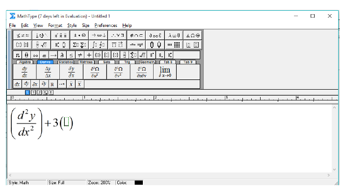

MathType Tutorials
MathType TutorialsWhat is MathType?
MathType is a software which is used to make mathematical equations like Integrals, differential equations, limits ....etc., with ease without using MS Word.
MathType Main window:
As you can see there are many options to create different types of mathematical equations, 1st three toolbars (other than Menu bar from the top) has options for different mathematical elements, while the last toolbar (bigger one) is divided into several categories according their subjects i.e., Algebra, Matrices, statistics, .....etc.,
How to make a Mathematical equation using MathType?
Let us analyse this with an example:
We have to make the above equation using MathType.
In this way we can make other equations using MathType and some simple observations.
How to copy the equations to Adobe Illustrator?
How to copy the equations to KompoZer?
For example we have to make:
Case (1):
Roots of Quadratic equation are given by $$\frac{{ - b \pm \sqrt {{b^2} - 4ac} }}{{2a}}$$
Case (2):
Roots of Quadratic equation are given by $\frac{{ - b \pm \sqrt {{b^2} - 4ac} }}{{2a}}$
The above two cases will be displayed in the web browser as shown below:
*To make the equation appear in the webpage, you must be connected to internet.
Go to the Source tab in Kompozer and you must insert the following script in the between <head></head> tags in souce code.
<script type="text/x-mathjax-config">
MathJax.Hub.Config({
tex2jax: {
inlineMath: [ ['$','$'], ["\\(","\\)"] ],
processEscapes: true
}
});
</script>
<script type="text/javascript"
src="http://cdn.mathjax.org/mathjax/latest/MathJax.js?config=TeX-MML-AM_CHTML">
</script>
To insert space between words :
*Remember all the mathematical terms, Physical terms for suppose elements like radius 'r', function 'F(x)' ...etc., must not be typed simply. They must be typed as for suppose 'r' must typed as '$r$', so that we can get in Mathematical font.
In this way we can prepare any Mathematical equation in MathType.
The more you practice, the more you excel.
Summary:
Credits: Upendra Sai Teja
MathType is a software which is used to make mathematical equations like Integrals, differential equations, limits ....etc., with ease without using MS Word.
MathType Main window:
As you can see there are many options to create different types of mathematical equations, 1st three toolbars (other than Menu bar from the top) has options for different mathematical elements, while the last toolbar (bigger one) is divided into several categories according their subjects i.e., Algebra, Matrices, statistics, .....etc.,
How to make a Mathematical equation using MathType?
Let us analyse this with an example:
We have to make the above equation using MathType.
- First open MathType.
- Go to the Fourth Toolbar which has different categories.
- Select Derivs category.
- Select option to create two open brackets i.e., ( ). Now the text pointer will bw in the middle of the brackects.
- Select option under Derivs category.
- Now move the pointer beside d in dy/dx and press 1st button in buttons (this is subscript). Now the pointer moves upwards. Type 2.
- Similarly go to x in dy/dx by clicking down button in keyboard. Repeat the same process to get d2y/dx2.
- Move the beside ), type +, then type 3.

- Repeat the similar process to make dy/dx.
- Move the beside ), type +, then type 2, =, 0.
In this way we can make other equations using MathType and some simple observations.
How to copy the equations to Adobe Illustrator?
- First go to Preferences menu in Menu bar.
- In Preferences menu select Cut and Copy Preferences.
- In Preferences Dialog box, select Equation object (Windows OLE graphic), then click OK.
- Then copy the equation as you select the text in MS Word.
- And paste it in Adobe Illustrator.
How to copy the equations to KompoZer?
- First go to Preferences menu in Menu bar.
- In Preferences menu select Cut and Copy Preferences.
- In Preferences Dialog box select MathML or TeX.
- In the drop-down box (it has LaTeX 2.09 and later option selected), select AMSTeX.
- And unselect the Include MathType data in Translation option, then click on OK.
- Then copy the equation as you select the text in MS Word.
- And paste it in KompoZer.
- After pasting, you will get a text in the form of '$$\left( {\frac{{{d^2}y}}{{d{x^2}}}} \right) + 3\left( {\frac{{dy}}{{dx}}} \right) + 2 = 0$$'.
- To appear the equation in the new line leave it as it is.
- To appear in the same line, remove $ from the pasted equation on both sides (i.e., left & right).
For example we have to make:
Case (1):
Roots of Quadratic equation are given by $$\frac{{ - b \pm \sqrt {{b^2} - 4ac} }}{{2a}}$$
Case (2):
Roots of Quadratic equation are given by $\frac{{ - b \pm \sqrt {{b^2} - 4ac} }}{{2a}}$
The above two cases will be displayed in the web browser as shown below:
*To make the equation appear in the webpage, you must be connected to internet.
Go to the Source tab in Kompozer and you must insert the following script in the between <head></head> tags in souce code.
<script type="text/x-mathjax-config">
MathJax.Hub.Config({
tex2jax: {
inlineMath: [ ['$','$'], ["\\(","\\)"] ],
processEscapes: true
}
});
</script>
<script type="text/javascript"
src="http://cdn.mathjax.org/mathjax/latest/MathJax.js?config=TeX-MML-AM_CHTML">
</script>
To insert space between words :
- If we want to make 'Molecular weight' in MathType it is not possible, because we can insert space in between words in MathType (try for yourself inserting a space).
- We can make only this Molecularweight in it.
- Copy and paste this in Kompozer. You will get this:
$$Molecularweight$$
- Now between the words Molecular and weight in above text add '\ ' in between them. It becomes:
$$Molecular\ weight$$
- Now save the file and load it in web browser you can see space between two words.
*Remember all the mathematical terms, Physical terms for suppose elements like radius 'r', function 'F(x)' ...etc., must not be typed simply. They must be typed as for suppose 'r' must typed as '$r$', so that we can get in Mathematical font.
In this way we can prepare any Mathematical equation in MathType.
The more you practice, the more you excel.
Summary:
- First open MathType.
- Type the Mathematical Equation which you want to make using the tools form the MathType.
- Set the Cut and Copy preferences according to the usage of the equation i.e., if you want to use in KompoZer or Adobe Illustrator (follow the process given above).
- Copy the equation from MathType.
- Paste the equation in KompoZer/Adobe Illustrator (according to your usage).
Credits: Upendra Sai Teja
Copyright ThinkMerit. All rights
reserved.